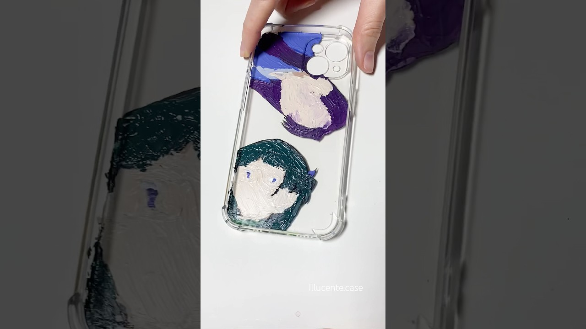
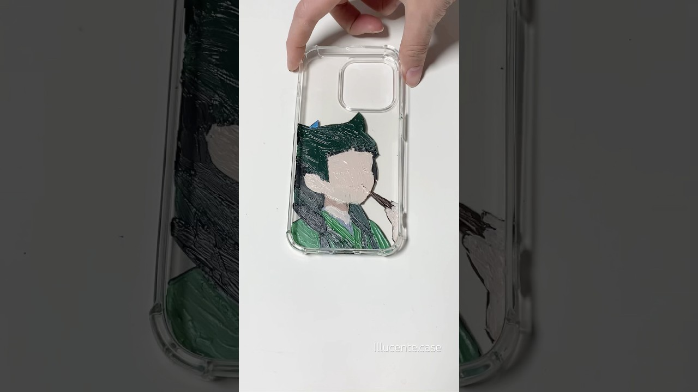
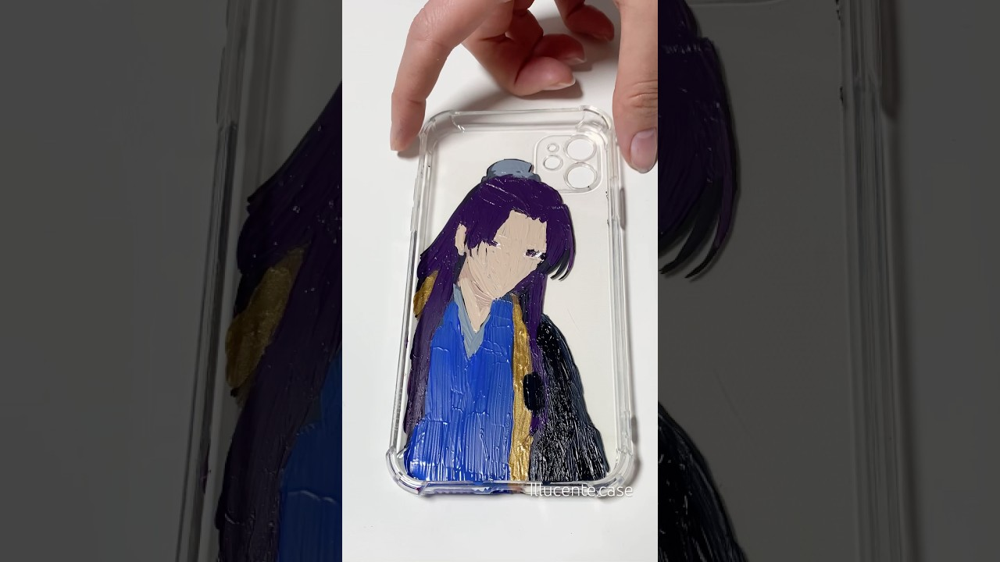
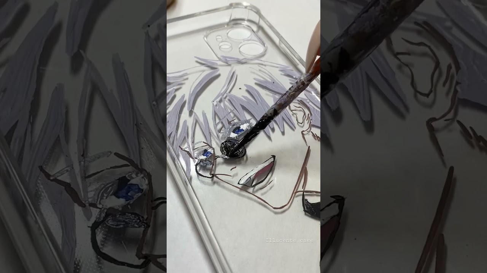
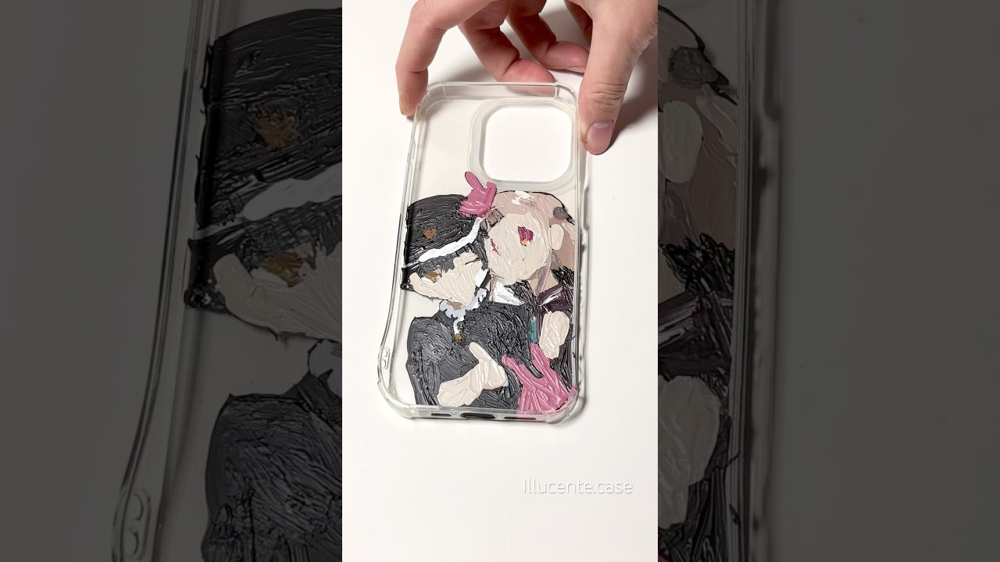
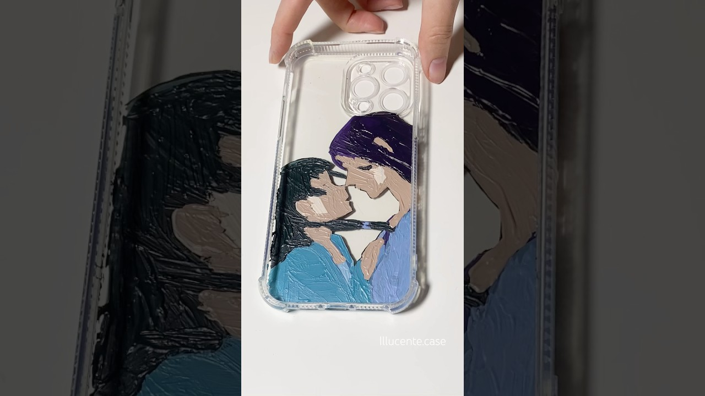
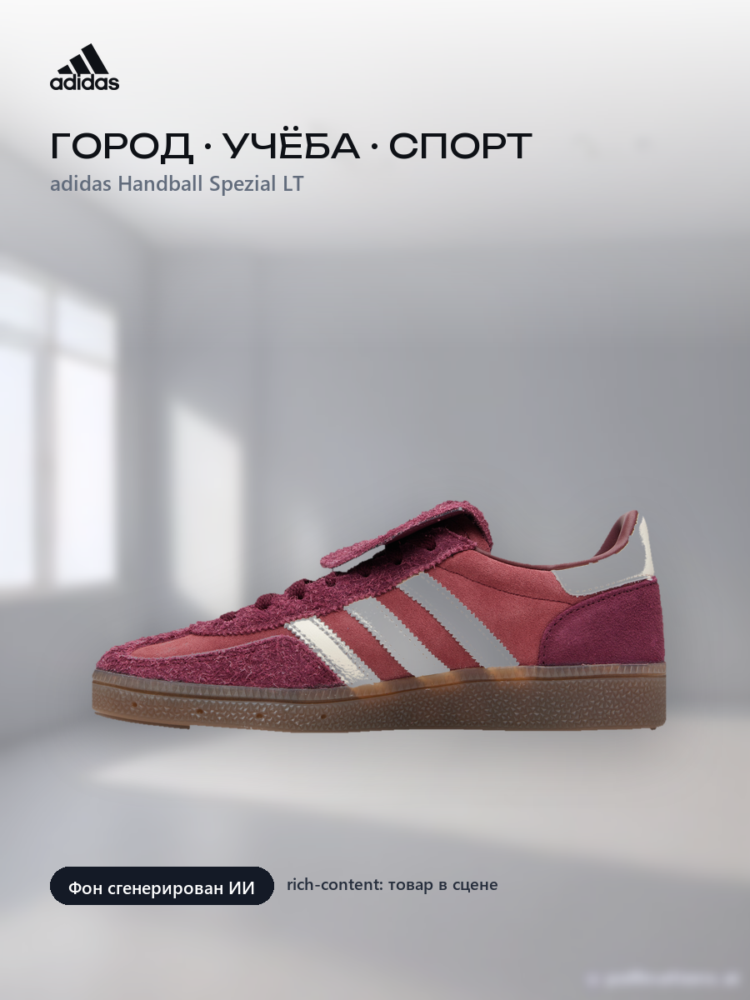
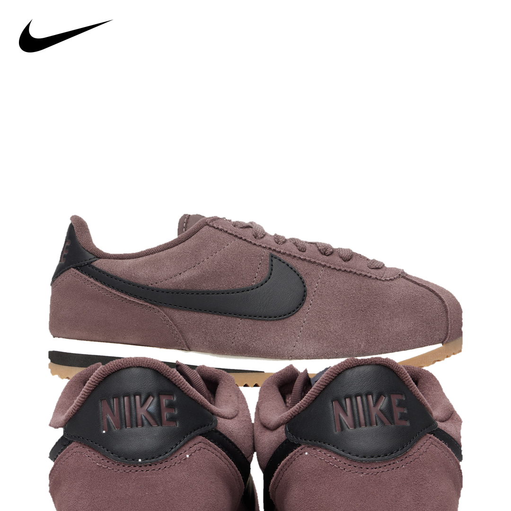
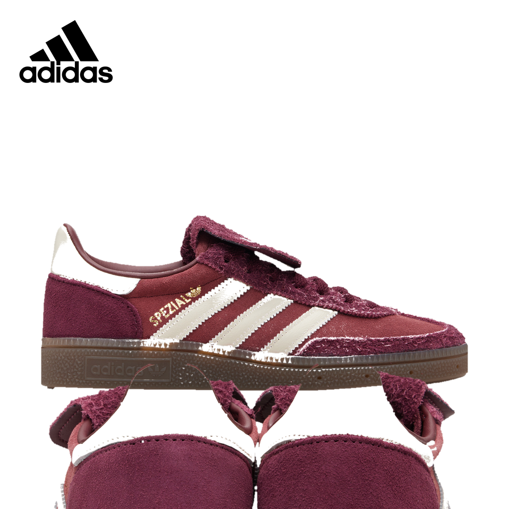
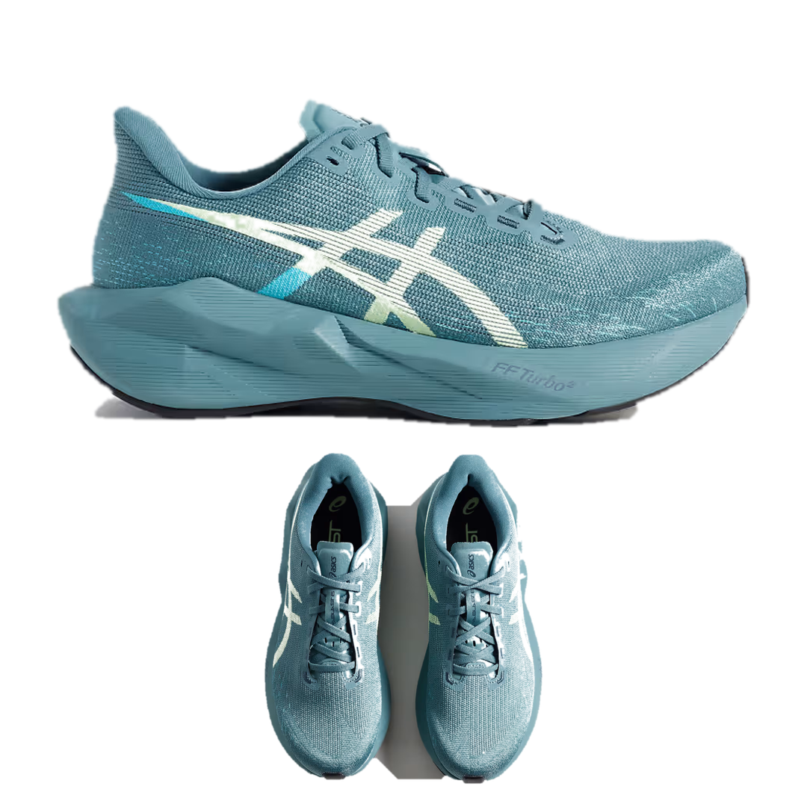

Портфолио · визуальный контент
Карина — видеомонтаж, дизайн, AI-контент
Монтирую Reels, Shorts и длинные видео, собираю карточки товаров для Wildberries и Ozon, делаю ретушь, коллажи и AI-визуал. Свой YouTube-канал веду с нуля — от идеи и съёмки до публикации и разбора метрик.
CapCutInShotffmpeg
PhotoshopIllustratorFigma
MidjourneyComfyUIKling
Ретушь и цветокоррекцияA/B-тесты первых слайдов
Reels / Shorts / длинный формат
12 700подписчиков на своём YouTube-канале (с нуля)
3,8 млнпросмотров у лучшего Shorts
8 миндлинное видео, смонтированное из 38 мин исходника (4K)
7 слайдовкарточек и инфографики в этом портфолио
01 · Видеомонтаж
Шоурил
46 секунд · вертикальный формат 1080×1920 · звук есть
Собран из моих собственных работ: короткие вертикальные ролики, fashion-рилс и фрагменты длинного 4K-видео.
- съёмка вертикально, монтаж «под ключ»: динамика, ритм, звук;
- длинный формат: ускорение 4x, цветокоррекция, нарезка лишнего, музыка;
- субтитры, плашки, обложки, адаптация под площадку;
- инструменты: CapCut, InShot, ffmpeg.
02 · Результаты
Мой YouTube: просмотры
канал @illucentecase · 12,7 тыс. подписчиков






Весь контент этих роликов — идея, съёмка, монтаж, обложка и публикация — мой. Отдельно смонтировала длинное видео в 4K: из 38 минут исходника сделала 8 минут — ускорение 4x, цветокоррекция, нарезка, музыка.
03 · E-commerce визуал
Карточки для маркетплейсов
Wildberries / Ozon · 900×1200 · читаемо с телефона





04 · Ретушь и коллажи
Лук-карточки для анонсов
бренд-логотип, вырезанные товары, чистый фон



05 · AI-контент
Нейросети в работе
генерация и доводка до товарного вида
Что делаю с AI
- генерация фонов, сцен и lifestyle-изображений для карточек;
- работа с промптами и референсами, подбор стиля под бренд;
- доводка генераций: убираю артефакты, сохраняю форму, цвет и фактуру товара;
- мокапы и AI-аватары, анимация слайдов;
- инструменты: Midjourney, ComfyUI, Kling, ChatGPT.
06 · Как я работаю
Процесс
удалённо · 5/2 или проектно
Дизайн-задачи
- разбираю задачу и аудиторию: что должен понять покупатель;
- собираю первый слайд и воронку карточки, предлагаю 2 варианта;
- инфографика, УТП, характеристики, rich-content;
- тестирую варианты и оставляю тот, что даёт лучший CTR;
- перед сдачей проверяю читаемость на телефоне.
Видео-задачи
- собираю под формат: Reels/Shorts, длинное видео, реклама;
- работаю по готовым референсам и ТЗ, без «я так вижу» вместо задачи;
- жёсткие дедлайны и правки — спокойно, по списку;
- отдаю исходники и проектные файлы, если нужно;
- объём до 80 роликов в месяц мне понятен и реалистичен.